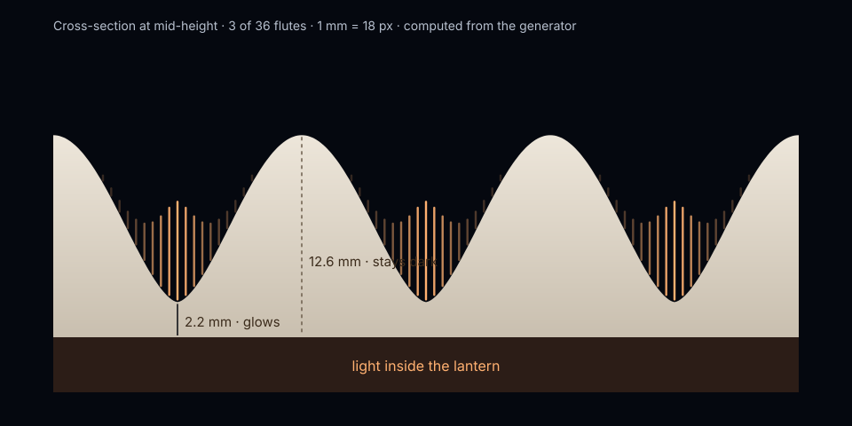
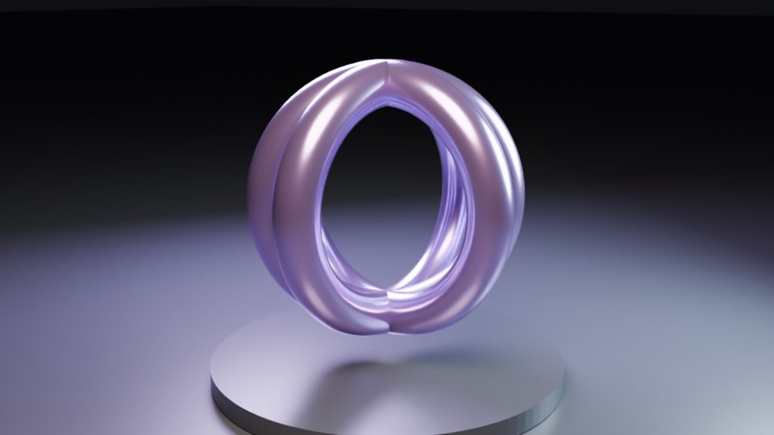

A proposal for Greatlinq T.2
Rooms worth meeting in.
Original 3D places and objects, made once for film and for live use. Six short chapters, about two minutes.
Scroll, swipe or use the arrow keys. Every image is labelled rendered or live.
 Rendered · Blender Cycles · same geometry, two times of day
Rendered · Blender Cycles · same geometry, two times of day
01 · A place
Your meeting has a place.
Five porcelain arches over still water, built in Blender and lit by a simulated sky. Drag to move from dawn to blue hour.
For T.2 Premium rooms authored once and exported to your pipeline (FBX or glTF, LODs, baked light). Proposed.
02 · An object
Something in it worth touching.
A rendered approach, then the same lantern is yours to handle. Bring up the light: it glows only where the porcelain is thin.
For T.2 Interactive objects inside a room: light, material, configuration. Proposed.
03 · Together
Changed together.
In a shared room, one person's change is everyone's. Here a second participant is simulated, so you can see the idea. Take the slider and it gives way.
Illustrative Not a Greatlinq feature. A T.2 integration is proposed, not built.

04 · Why it glows
Make the invisible understandable.
The wall is 2.2 mm in each valley and 12.6 mm on each ridge. Light passes the thin parts and the thick ones hold it back. The same model draws this diagram, renders the film and drives the live glow.
For T.2 Objects your AI avatars can explain: sections, parts, steps. Next: a mechanism that opens into its parts.
05 · Portfolio
Made by ond.ai, so far.
Original work with no third-party rights in it, shown here for review. Each card says how it was made.
- The ThresholdPlace · Blender Cycles stills, EEVEE film draftSee chapter 01
 LanternObject · Cycles render + live three.js, 463 KBOpen live
LanternObject · Cycles render + live three.js, 463 KBOpen live Ribbed archObject · Cycles render with a hidden cut to live 3DOpen live
Ribbed archObject · Cycles render with a hidden cut to live 3DOpen live
Studio sculptureVideo Studio · procedural Cycles shot
Internal review only Not for Greatlinq or any external audience until rights are cleared. Links open the earlier collection.
- Bellagio worldsHeld: trademarked resort; satellite-derived ground imagery.
- KONA.m museumHeld: sculptures generated with third-party AI services; terrain rights open.
- Speedmax bikeHeld: Canyon and DT Swiss marks; athlete name in a concept image.
- Sea Glass Wave · Basalt AirfoilHeld: provenance not yet documented.
06 · Pilot · Greatlinq T.2
Put Threshold and the lantern in a real meeting.
You already walked the place and lit the object. The pilot is to land one room + one interactive object in a Greatlinq T.2 meeting space in four to six weeks — then measure only what we can prove.
- Import time into T.2, and developer hours saved vs hand rebuild
- Load time and frame rate on your client, against your budget
- Interaction: who uses the object, and for how long
- Understanding: five questions, before and after
- Weight: total bytes against your current rooms
From Greatlinq T.2 import spec (format, engine version, budgets, interaction API), one test meeting room, and a review with the people who ship rooms.
Honest Proposed for T.2 — not a Greatlinq product or shipped integration. Every chapter you saw is original ond.ai work running locally in this demo.
ond.ai Spatial Studio · independent concept preview for Greatlinq